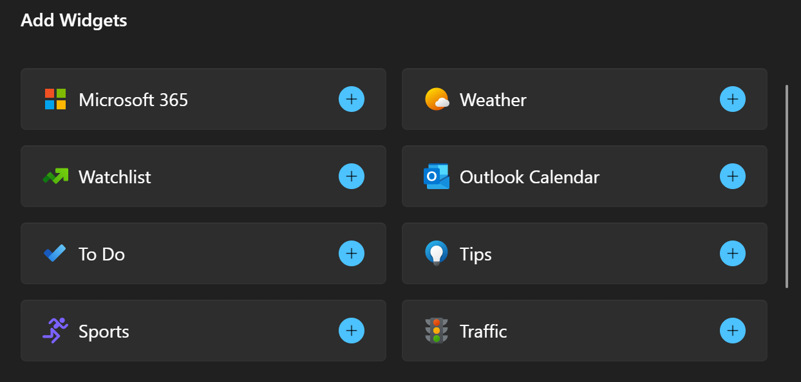

Widget provider package manifest XML format
In order to be displayed in the widgets host, apps that support Windows widgets must register their widget provider with the system. For Win32 apps, only packaged apps are currently supported and widget providers specify their registration information in the app package manifest file. This article documents the XML format for widget registration. See the Example section for a code listing of an example package manifest for a Win32 widget provider.
App extension
The app package manifest file supports many different extensions and features for Windows apps. The app package manifest format is defined by a set of schemas that are documented in the Package manifest schema reference. Widget providers declare their registration information within the uap3:AppExtension. The Name attribute of the extension must be set to "com.microsoft.windows.widgets".
Widget providers should include the uap3:Properties as the child of uap3:AppExtension. The package manifest schema does not enforce the structure of the uap3:Properties element other than requiring well-formed XML. The rest of this article describes the XML format that the Widget host expects in order to successfully register a widget provider.
<uap3:Extension Category="windows.appExtension">
<uap3:AppExtension Name="com.microsoft.windows.widgets" DisplayName="WidgetTestApp" Id="ContosoWidgetApp" PublicFolder="Public">
<uap3:Properties>
<!-- Widget provider registration content goes here -->
</uap3:Properties>
</uap3:AppExtension>
</uap3:Extension>
Element hierarchy
WidgetProvider
ProviderIcons
Icon
Activation
CreateInstance
ActivateApplication
Definitions
Definition
Capabilities
Capability
Size
ThemeResources
Icons
Icon
Screenshots
Screenshot
DarkMode
Icons
Icon
Screenshots
Screenshot
LightMode
Icons
Icon
Screenshots
Screenshot
WidgetProvider
The root element of the widget provider registration information.

WidgetProviderIcons
Specifies icons representing the widget provider app.
Activation
Specifies activation information for the widget provider. If both CreateInstance and ActivateApplication are specified in the manifest, CreateInstance takes precedence.
CreateInstance
CreateInstance should be specified for Win32-based widget providers that implement the IWidgetProvider interface. The system will activate the interface with a call to CoCreateInstance. The ClassId attribute specifies the CLSID for the CreateInstance server that implements the IWidgetProvider interface.
| Attribute | Type | Required | Description | Default value |
|---|---|---|---|---|
| ClassId | GUID | Yes | The CLSID for the CreateInstance server that implements the widget provider. | N/A |
ActivateApplication
When ActivateApplication is specified, the widget provider is activated via the command line, with the arguments provided as base64url encoded JSON strings. It is recommended that widget providers use the CreateInstance activation type. For information on the ActivateApplication command line format, see Widget provider ActivateApplication protocol.
Definitions
The container element for one or more widget registrations.
Definition
Represents the registration for a single widget.
| Attribute | Type | Required | Description | Default value |
|---|---|---|---|---|
| Id | string | Yes | An ID that identifies the widget. This value is also displayed in the navigation bar of the widget picker. Widget provider implementations use this string to determine or specify which of the app's widgets is being referenced for each operation. This string must be unique for all widgets defined within the app manifest file. | N/A |
| DisplayName | string | Yes | The name of the widget that is displayed on the widgets host. | N/A |
| Description | string | Yes | Short description of the widget. | N/A |
| AllowMultiple | boolean | No | Set to false if only one instance of this widget is supported. This attribute is optional and the default value is true. | true |
| IsCustomizable | boolean | No | Introduced in Windows App SDK 1.4. Set to true if your app supports widget customization. This causes the Customize widget button to be displayed in the widget's ellipsis menu. | false |
| AdditionalInfoUri | string | No | A URI that can be associated with the widget to be used when the user clicks on the title bar of the widget frame or when clicking the Powered by element of its context menu. | N/A |
| ExcludedRegions | string | No | A list of regions where the widget should not be available. Widgets can specify ExcludedRegions or ExclusiveRegions but must not specify both in a single widget definition. The value of the attribute is a comma separated list of two character region codes. | N/A |
| ExclusiveRegions | string | No | A list of the only regions where the widget should be available. Widgets can specify ExcludedRegions or ExclusiveRegions but must not specify both in single widget definition. The value of the attribute is a comma separated list of two character region codes. | N/A |
| WebRequestFilter | string | No | Specifies the filter that specifies the resource request URLs for which the request will be intercepted and redirected to the widget provider's implementation of IWidgetResourceProvider.OnResourceRequested. The filter pattern is expressed using the format described in Match Patterns. The filter string in the registration must use Punycode where necessary. The filter string must match the origin of the widget registration, which is specified in the webUrl field of the adaptive card content. | N/A |
Capabilities
Optional. Specifies capabilities for a single widget. If no capabilities are declared, one capability specifying a "large" size is added by default.
Capability
Specifies a capability for a widget.
Size
Specifies supported sizes for the associated widget.
| Attribute | Type | Required | Description | Default value |
|---|---|---|---|---|
| Name | string | Yes | Specifies a supported size for a widget. The value must be one of the following: "small", "medium", "large" | N/A |
ThemeResources
Specifies theme resources for a widget.
Icons
A container element for one or more Icon elements.
Icon
Required. Specifies an icon that is displayed in the attribution area of the widget.
| Attribute | Type | Required | Description | Default value |
|---|---|---|---|---|
| Path | string | Yes | The package-relative path to an icon image file. | N/A |
Screenshots
Required. Specifies one or more screenshots of the widget.
Screenshot
Required. Specifies a screenshot for a widget. This screenshot is shown in the widgets host in the Add Widgets dialog when the user is selecting widgets to add to the widgets host. If you provide a screenshot for the optional DarkMode or LightMode elements listed below, then the widgets host will use the screenshot that matches the current device theme. If you don't provide a screenshot for the current device theme, the image provided in this Screenshot element will be used. For information about the design requirements for screenshot images and the naming conventions for localized screenshots, see Integrate with the widget picker.
Note
The widget screenshots are not displayed on the widgets board's add widgets dialog in the current preview release..
| Attribute | Type | Required | Description | Default value |
|---|---|---|---|---|
| Path | string | Yes | The package-relative path to a screenshot image file. | N/A |
| DisplayAltText | string | No | The alt-text for the image, for accessibility. | N/A |
DarkMode
Optional. Specifies theme resources for when dark mode is active on the device. If you specify one or more screenshot images in the optional DarkMode element, the widgets host will select these screenshots when the device is in dark mode. If you don't provide a dark mode image, the widgets host will use the required, top-level Screenshot element described above. For information about the design requirements for screenshot images and the naming conventions for localized screenshots, see Integrate with the widget picker.
LightMode
Optional. Specifies theme resources for when light mode is active on the device. If you provide one or more screenshot images in the optional LightMode element, the widgets host will select these screenshots when the device is in light mode. If you don't provide a light mode image, the widgets host will use the required, top-level Screenshot element described above. For information about the design requirements for screenshot images and the naming conventions for localized screenshots, see Integrate with the widget picker.
Example
The following code example illustrates the usage of the widget package manifest XML format.
<uap3:Extension Category="windows.appExtension">
<uap3:AppExtension Name="com.microsoft.windows.widgets" DisplayName="Widget Test App" Id="ContosoWidgetApp" PublicFolder="Public">
<uap3:Properties>
<WidgetProvider>
<ProviderIcons>
<Icon Path="Images\StoreIcon.png" />
</ProviderIcons>
<Activation>
<!-- App exports COM interface which implements IWidgetProvider -->
<CreateInstance ClassId="XXXXXXXX-XXXX-XXXX-XXXX-D3397A3FF15C" />
</Activation>
<Definitions>
<Definition
Id="Weather_Widget"
DisplayName="Microsoft Weather Widget"
Description="Weather Widget Description"
AdditionalInfoUri="https://contoso.com/widgets/Weather"
ExclusiveRegions="US,UK"
AllowMultiple="true">
<Capabilities>
<Capability>
<Size Name="small" />
</Capability>
<Capability>
<Size Name="medium" />
</Capability>
<Capability>
<Size Name="large" />
</Capability>
</Capabilities>
<ThemeResources>
<Icons>
<Icon Path="Assets\icon.png" />
<Icon Path="Assets\icon.gif" />
</Icons>
<Screenshots>
<Screenshot Path="Assets\background.png" DisplayAltText ="For accessibility"/>
</Screenshots>
<!-- DarkMode and LightMode are optional -->
<DarkMode>
<Icons>
<Icon Path="Assets\dark.png" />
</Icons>
<Screenshots>
<Screenshot Path="Assets\darkBackground.png" DisplayAltText ="For accessibility"/>
</Screenshots>
</DarkMode>
<LightMode>
<Icons>
<Icon Path="Assets\light.png" />
</Icons>
<Screenshots>
<Screenshot Path="Assets\lightBackground.png"/>
</Screenshots>
</LightMode>
</ThemeResources>
</Definition>
</Definitions>
</WidgetProvider>
</uap3:Properties>
</uap3:AppExtension>
</uap3:Extension>